The Gestures library provides gesture recognizers to detect gestures through touch events that occur when you place one or more fingers on a touch screen.
A gesture is an interaction between users and your application through a touch screen.
|
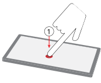 Tap One touch with one finger. |
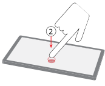 Double tap Two touches in quick succession with one finger. |
|
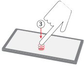 Triple tap Three touches in quick succession with one finger. |
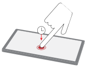 Long press One touch with a pause before releasing. |
|
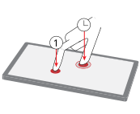 Press and tap One long press with one finger, followed by a touch with a second finger. |
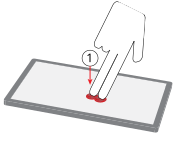 Two-finger tap One touch with two fingers. |
|
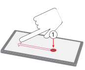 Swipe One continuous horizontal or vertical motion consisting of a tap, a movement, and a release with one finger. |
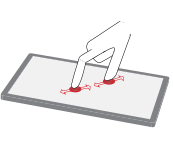 Pinch One continuous motion consisting of a two-finger tap, a movement inward or outward, and a release. |
|
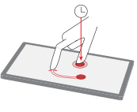 Rotate One long press with one finger, followed shortly by a swipe in an arc by your second finger |
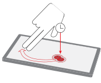 Two-finger pan One continuous motion consisting of a long press, a movement, and a release with two fingers |
|
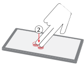 Two-finger double tap Two touches in quick succession with two fingers. |
There are two classes of gestures:
A gesture recognizer is a self-contained state machine. It progresses through its various states in reaction to the touch events that it receives. Depending on the gesture, a gesture recognizer may need to interpret single- or multiple-touch events in order to detect a single gesture. That is, a gesture recognizer could transition through multiple states before being able to determine the gesture that the user intended. Once the gesture recognizer detects a gesture, its gesture callback is invoked. It is the responsibility of your application to handle the detected gesture in your gesture callback function. In the context of the Gestures library, you will see that the gesture recognizers are simply referred to as gestures.
Gesture recognizers for some of the widely used gestures are already provided for you by the Gestures library:
| Gesture Recognizer | Gesture class | Uses timer(s) |
|---|---|---|
| Tap | Discrete | No |
| Double tap | Discrete | Yes |
| Triple tap | Discrete | Yes |
| Long press | Discrete | Yes |
| Press and tap | Discrete | No |
| Two-finger tap | Discrete | No |
| Two-finger double tap | Discrete | Yes |
| Swipe | Composite | No |
| Pinch | Composite | No |
| Rotate | Composite | No |
| Two-finger pan | Composite | No |
Some gesture recognizers use timers as part of their detection of gestures. If you need to detect a gesture that isn't supported by the Gestures library, you can define your own gesture recognizer.
Touch events are events generated by the touch controller. In the Gestures library, touch events are represented by the data structure mtouch_event_t. mtouch_event_t contains various types of information about the touch event, such as the type of touch event (touch, move, or release), the timestamp of the event, the coordinates of the touch, and so on. Touch events that are represented by this data structure are referred to as mtouch events. See the file input/event_types.h for more information.
A gesture set is a set of gesture recognizers; it can detect multiple types of gestures. Your application defines a gesture set by allocating, to the set, the gesture recognizers that detect the gestures that are of interest to you.
You can think of a gesture set as the interface between gesture recognizers and the application. The application sends mtouch events to a gesture set, not to individual gesture recognizers. Individual gesture recognizers must belong to a gesture set to be able to receive mtouch events and invoke callback functions when the gesture recognizer state transitions happen.
Inter-gesture recognizer relationships and dependencies are to be managed completely by the gesture set. Therefore, individual gesture recognizers are simple to implement and allow the application to customize the desired gesture-recognizer relationships for its own needs. Also, applications that are interested only in a small subset of gestures can choose its gesture recognizers of interest.
A gesture set handles all that is required of the state transition. Examples of what the gesture set handles are:
| For information about: | See: |
|---|---|
| Recognizing gestures | |
| State transitions of gesture recognizers | State transitions |
| The gesture callback | Callback invocation |
| Timers | |
| Failures | |
| Resets | Reset |
| Defining your own gesture recognizer | Custom gestures |
| Tutorials | Gestures Tutorials |
| What's in the Gestures library? | Gestures Library Reference |